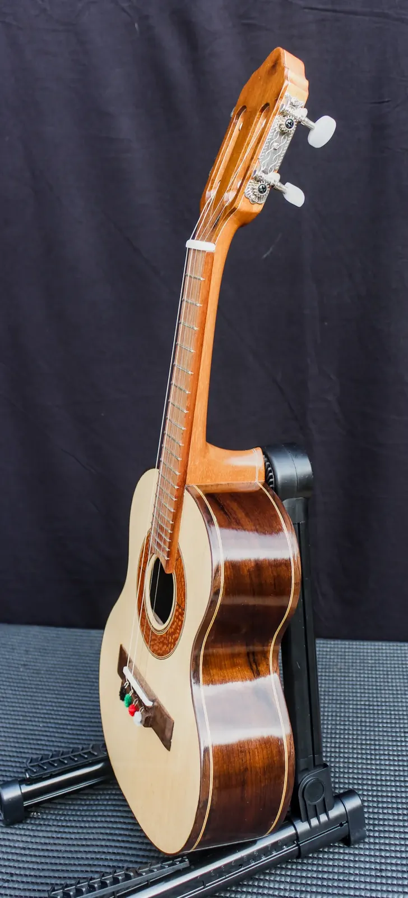

Guaraci Cavaquinho

Madeiras
- Tampo
- Marupá
- Fundo e laterais
- Imbuia
- Braço
- Cedro
- Escala
- Pau Ferro
- Cavalete
- Pau Ferro
Componentes
- Tarraxas
- Tradicional, corpo metálico reforçado
- Filetes / marchetaria
- Marchetaria em madeira, aplicação manual
- Acabamento
- Goma Laca Indiana
- Trastes, nut e rastilho
- Nut e rastilho em osso legítimo
- Preço
- R$ 2.000,00
- Identificação
- BL-25-CV-002
Guaraci é o sol na mitologia tupi-guarani — a força que dá vida e ritmo aos dias. Não é à toa que esse nome caiu bem nesse cavaquinho: tem um timbre quente, projetado, do tipo que puxa a roda de samba mesmo sem microfone.
A dupla marupá no tampo e imbuia no fundo e laterais é uma combinação que já testei várias vezes na bancada: o marupá responde rápido e claro, a imbuia segura o grave e dá corpo ao som, evitando aquele timbre fino e metálico que estraga um bom cavaquinho. O braço em cedro mantém peso equilibrado e conforto nas horas mais longas de toque.
A escala e o cavalete em pau-ferro garantem estabilidade dimensional — pouca variação com temperatura e umidade, o que significa menos reajuste de setup ao longo dos anos. Os filetes em marchetaria de madeira e o acabamento em goma-laca indiana foram trabalhados para realçar o veio natural da madeira, sem esconder a identidade de cada peça.
Cada Guaraci que sai da minha bancada carrega um pouco dessa energia solar: instrumento pra tocar forte, com presença e brilho que não se apaga na mistura com outros instrumentos.